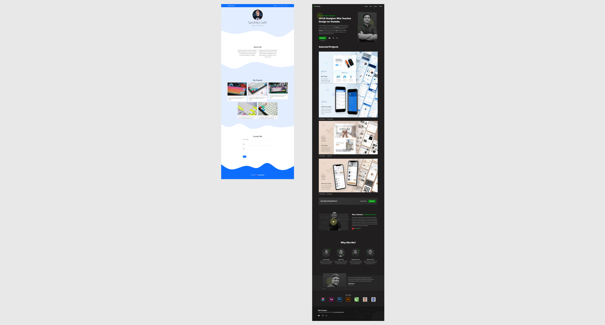
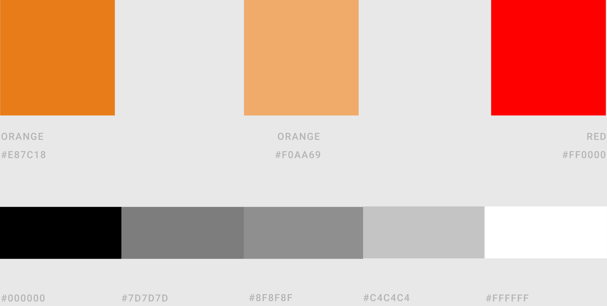
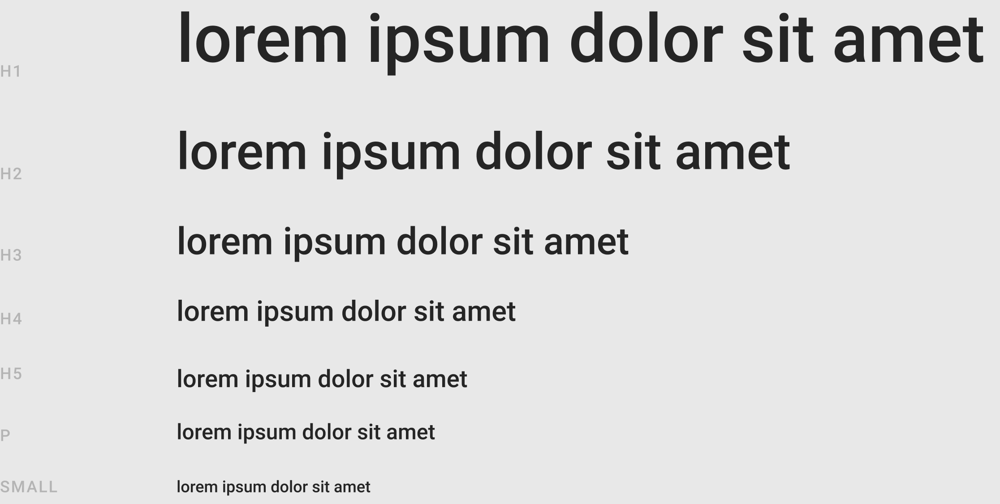
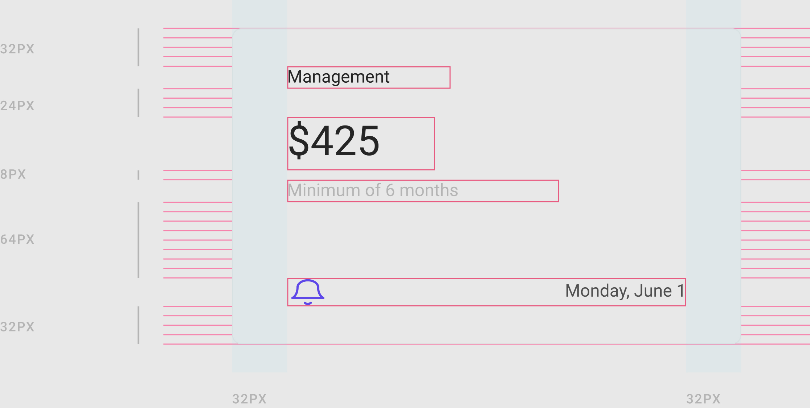
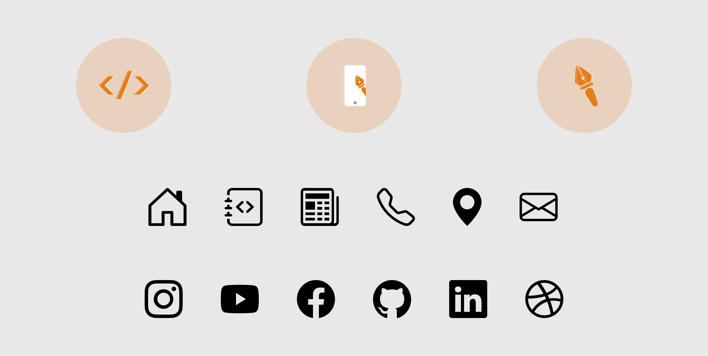
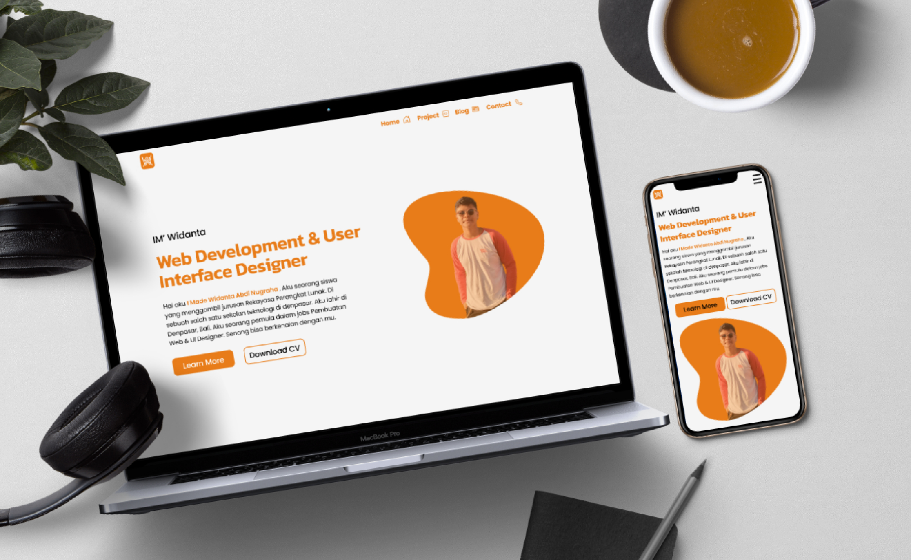

Portfolio Web Project — New Design
Latar Belakang
Web Widanta.github.io pertama kali aku buat pada Februari 2021. Dengan tampilan User Interface yang sederhana, tampilan web yang belum interaktif, banyak icon dan button yang kurang proporsional, serta kombinasi warna yang kurang tepat. Akhirnya pada bulan Juni aku putuskan untuk membuat ulang — mulai dari tampilan hingga manajemen coding secara menyeluruh.
Design Process
Inspirasi Website

Inspirasi Website
Website yang saya buat terinspirasi dari Web Sandhika Galih.github.io & KukuhAldy.com — yang saya temukan melalui YouTube channel Web Programing UNPAS & Mas KukuhAldy. Dari ilmu yang saya dapatkan, saya gabungkan menjadi sebuah website yang saya gunakan sekarang.
Color

Color Palette
Ada tiga warna penting yang dikombinasikan — orange, hitam, dan abu-abu. Orange adalah warna utama, hitam sebagai aksen pada heading, dan abu-abu untuk paragraf agar memberikan kesan kontras yang memudahkan pembaca membedakan judul dan isi konten.
Typography

Typography Scale
Beberapa ukuran font yang digunakan: H1 = 50px, H2 = 38px, H3 = 28px, H4 = 21px, H5 = 18px, dan Paragraph = 16px. Ukuran tersebut hanya sebagai acuan — penyesuaian dilakukan berdasarkan ukuran device untuk menjaga keterbacaan yang optimal di semua layar.
Spacing

Spacing System
Sistem spacing berbasis kelipatan 8 diterapkan agar user mudah membedakan hierarki konten — antara heading, sub-heading, dan paragraf. Penyesuaian dilakukan bila diperlukan, misalnya antara Hero section dan sub-section di bawahnya.
Icons Website

Icons Website
Tiga icon utama merepresentasikan layanan: Web Development (ilustrasi coding), UI Designer (pentools + mockup mobile), dan Graphic Designer (pentools). Ilustrasi bersumber dari undraw.co (open source), dilengkapi ikon dari Bootstrap Icons.
Before & After
Before

After

Feature Section — Old vs New
Result

New Design Web Portfolio